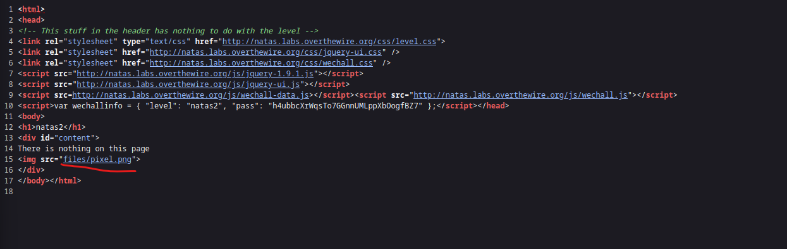
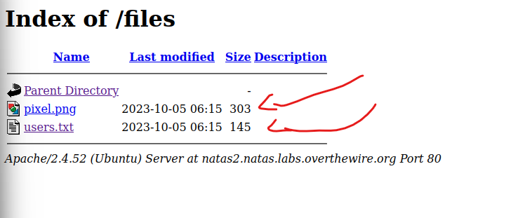
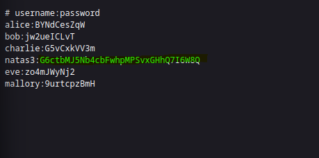

In this case I could use right click. So I took a look in the sourcd code
In this lvl I could find a hidden directory. "/files"
In this directory i could find to files the pixel.png and the useres.txt. At first I tried the users.txt.
And Bam!! There we found the password for natas3
Back to the Menu Natas4